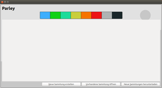
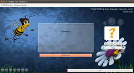
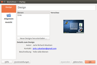

Parley
Dieser Artikel wurde für die folgenden Ubuntu-Versionen getestet:
Ubuntu 16.04 Xenial Xerus
Zum Verständnis dieses Artikels sind folgende Seiten hilfreich:
Parley  ist ein Vokabeltrainer und das Nachfolgeprojekt von KVocTrain. Die Oberfläche ist um einiges ansprechender und das Programm ist sehr benutzerfreundlich. Parley organisiert das Wörterlernen nach dem Leitner-System. Der Vokabeltrainer ist sehr umfangreich und bietet eine Vielzahl von Einstellungsmöglichkeiten, was die Erstellung von Wörterlisten und das Lernen betrifft.
ist ein Vokabeltrainer und das Nachfolgeprojekt von KVocTrain. Die Oberfläche ist um einiges ansprechender und das Programm ist sehr benutzerfreundlich. Parley organisiert das Wörterlernen nach dem Leitner-System. Der Vokabeltrainer ist sehr umfangreich und bietet eine Vielzahl von Einstellungsmöglichkeiten, was die Erstellung von Wörterlisten und das Lernen betrifft.
Installation¶
Folgendes Paket muss installiert [1] werden:
parley (universe)
 mit apturl
mit apturl
Paketliste zum Kopieren:
sudo apt-get install parley
sudo aptitude install parley
Verwendung¶
Parley kann bei Ubuntu-Varianten mit einem Anwendungsmenü über "Bildung -> Parley" gestartet werden [2].
Lernen¶
Als erstes wird die entsprechende Wörterliste geöffnet. Innerhalb der Listen können die einzelnen Lektionen ausgewählt werden. Es ist möglich, mehrere Lektionen gleichzeitig zu üben. Über den Menüpunkt "Übung einrichten" kann festgelegt werden, in welche Richtung man lernen möchte, also von der Originalsprache zur Fremdsprache oder umgekehrt.
|  |
| Der erste Start |
|  |
| Eine Übung |
Weiter steht eine Vielzahl möglicher Übungsformen zur Verfügung. Aus den Übungseinstellungen kann direkt eine Übung gestartet werden. Wird eine Übung beendet oder abgebrochen, gibt eine Zusammenstellung darüber Auskunft, wie erfolgreich gelernt worden ist. Zu jeder Wörterdatei wird eine Statistik gespeichert.
Dateiformate¶
Sehr praktisch ist, dass die Trennzeichen der CSV-Dateien selbst bestimmt werden können. Dies erleichtert den Import und Export von Wörterlisten mit anderen Vokabeltrainer.
Vokabeldatei hochladen¶
Wurde eine neue Vokabeldatei erstellt, kann man diese mit der Gemeinschaft teilen. Dazu ist ein Zugang auf kde-files.org notwendig.
Die erstellte Vokabeldatei wird mit Parley geöffnet. Im Register "Datei -> Vokabeldokument hochladen" erstellt man eine Beschreibung für das Dokument. Beispiel:
Name: "Englisch Klasse 7 / 1. Halbjahr!
Version: "EigeneVersionsNr. - 1"
Beschreibung: "Vokabeln lernen, Sätze übersetzen"
Nachdem alles eingetragen ist, wird mit "Hochladen" der Vorgang bestätigt. Nun wird der Benutzername und das Passwort von der Anmeldung eingetragen und die neue Vokabeldatei wird hochgeladen.
Vokabeldatei aktualisieren¶
Um eine bereits hochgeladene Vokabeldatei zu aktualisieren, wenn sich z.B. ein Fehler eingeschlichen hat, Parley öffnen. Am einfachsten geht es aus dem Startfenster heraus. Hier wählt man "Neue Sammlung herunterladen". Im folgenden Fenster unten unter "Suchen" die gesuchte Vokabeldatei eintragen. Beispiel - Englisch Klasse 7 - Das schränkt die Angebote ein. Nun im Fenster die entsprechende Vokabeldatei suchen und "Details" wählen. Im Detailfenster unten "Homepage aufrufen" wählen. Auf der Homepage im Fenster "Delete" wählen und nochmals bestätigen.
Hinweis:
Löschen kann nur der Ersteller der Vokabeldatei!
Nun kann die aktualisierte Vokabeldatei erneut hochgeladen werden. Es empfiehlt sich, den gleichen Namen für die aktualisierte Vokabeldatei zu verwenden.
Einstellungen¶
|  |
| Einstellungen |
Unter "Einstellungen -> Parley einrichten" können individuelle Einstellungen vorgenommen werden (beispielsweise die Farbgebung, welche anzeigt, wie oft ein Wort bereits gelernt worden ist).

 - Übersichtsartikel
- Übersichtsartikel- Erstellt mit Inyoka
-
 2004 – 2017 ubuntuusers.de • Einige Rechte vorbehalten
2004 – 2017 ubuntuusers.de • Einige Rechte vorbehalten
Lizenz • Kontakt • Datenschutz • Impressum • Serverstatus -
Serverhousing gespendet von